Concept Dossier · AGT-3950 · Deployment dashboard charts
Views and filters
What each view of Workspace / Deployments shows, how it encodes it, which aggregation it reads, and how filters, cross-filter, link state and keyboard work. Every capture is taken from the prototype of this Dossier.
Today and the questions
Today's page (AGT-3200, AGT-3277, AGT-3315) is a table of projects by Staging and Production with release, age, state and health, followed by one delivery-lane block per project with a box for each card. It answers "what is the state of this cell" one cell at a time. The questions an operator brings are wider, and each view below answers one of them:
| Question | View | Form and why |
|---|---|---|
| How is delivery going, and is it getting better? | Delivery figures | Four numbers are not a chart: stat tiles with the comparison in words and a sparkline. |
| What is live where, what is behind, what is broken, what is missing? | Overview | A grid of projects by environments with magnitude on one hue: a tile map. Status marks by shape, not by colour alone. |
| Where do the integrated cards sit, and which project holds them? | Release flow | Counts that split between stages: a flow with proportional bands, plus ranked bars for the projects. |
| When did deploys run, how long, with which outcome, failing where? | Deploy timeline | Events over time by environment: a dot per run in a lane, with a brush. |
| Is there a pattern across projects and weeks? | Deploy landscape, 3D, opt-in | Two measures on one grid: height and colour. |
The design follows the house direction: calm base, colour only where it carries a state, all of it from the Studio tokens in both themes. The one playful element is the landscape that lays itself flat into its heat map. Sections are separated by headings and hairlines, not boxed into cards.
Delivery figures
For Production, in the selected range, each against the same number of days before it and with a weekly trend. Definitions, fixed by tests in slice DDC-4:
- Deploy frequency: succeeded Production deployments a week.
- Lead time: median time from the integration of a card to the finish of the Production deployment that contains it.
- Change failure rate: share of finished Production deployments that failed or were rolled back.
- Time to restore: median time from a failed Production deployment to the next succeeded one of the same project and tenant.
A figure without data says so and never shows zero. The comparison is written out ("0.7 vs the 90 days before, better") so that the direction does not depend on colour. Aggregation: figures[] of the dashboard aggregate, with value, before and weekly[].
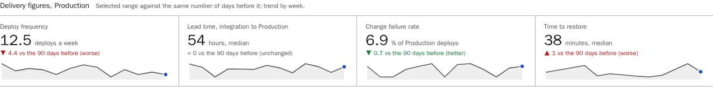
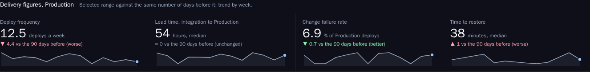
prototype.html, commit base ca26ce2ef) by capture.mjs, headless Chromium, 1440 px, light and dark. Data: the seeded synthetic set of src/data.js, not a product state.Overview
One row a project, grouped by project group, one tile an environment. A tile carries, readable on the tile itself at 1440 px: the live release and the number of releases behind the newest one (fill on one hue, five steps, and the words), the last run as a shape (check, disc, triangle, ring, dash), health as a dot, a clock pill with the number of cards waiting for approval, a red corner when the data of that environment has no verified off-host backup, and an amber corner for an open construction site or warning. At 390 px the tile keeps the marks and shortens the words. An environment that a project does not have is an empty outlined tile; a project without any environment is one outlined row that says "Not set up: no environment declared", so nothing disappears from the page.
With "Split by tenant" a tile of a multi-tenant environment divides into one strip a tenant. Filters dim tiles that do not match instead of removing them, so the context stays. The tooltip repeats every value in words, the same text appears for the keyboard focus, and "Table" swaps in a plain table of the same values. Aggregation: tiles[].
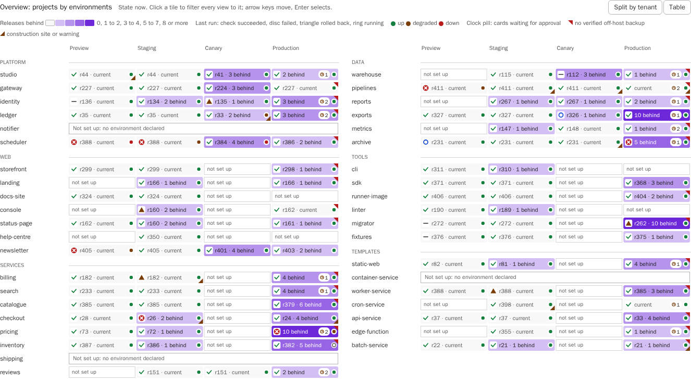
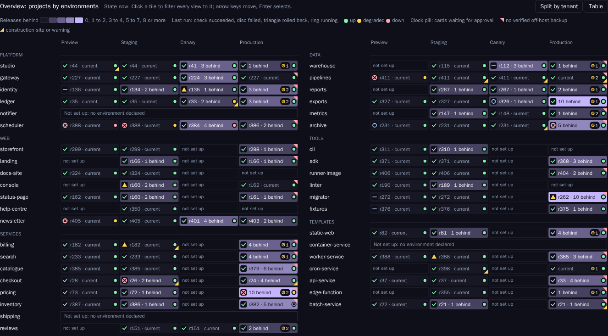
prototype.html, commit base ca26ce2ef) by capture.mjs, headless Chromium, 1440 px, light and dark. Data: the seeded synthetic set of src/data.js, not a product state.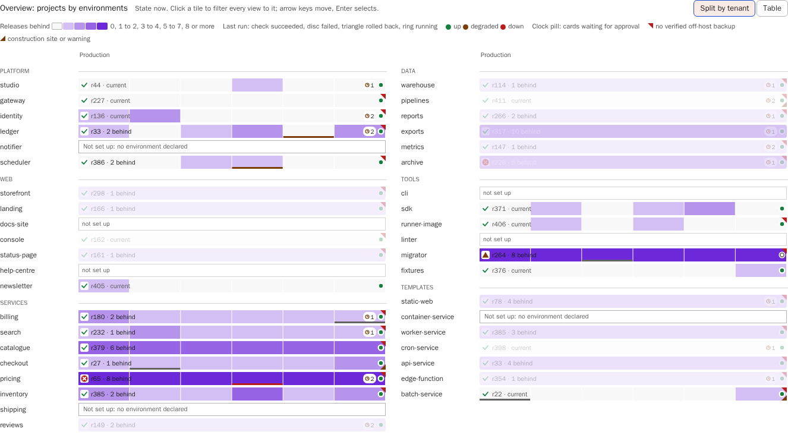
prototype.html, commit base ca26ce2ef) by capture.mjs, headless Chromium, 1440 px, light. Data: the seeded synthetic set of src/data.js, not a product state.Release flow
Replaces the long card column. All cards integrated in the range enter on the left. They split into "Not deployed yet" and "Reached Staging", and the latter into "On Staging only", "Waiting for approval" and "Live in Production". Band widths are proportional to the counts (a band never gets thinner than 2 px, so a small state stays visible); states where cards wait are amber, live is green, the rest neutral. Each state prints its count and share. Beside the flow, ranked bars name the projects that hold the cards not yet live and where they hold them.
A click or Enter on an end state lists its cards under the flow. The list is windowed: with thousands of cards a few dozen rows exist in the DOM. Aggregation: flow.nodes[], flow.links[], flow.waitingByProject[]; the list reads GET /api/deploy/dashboard/cards page by page.
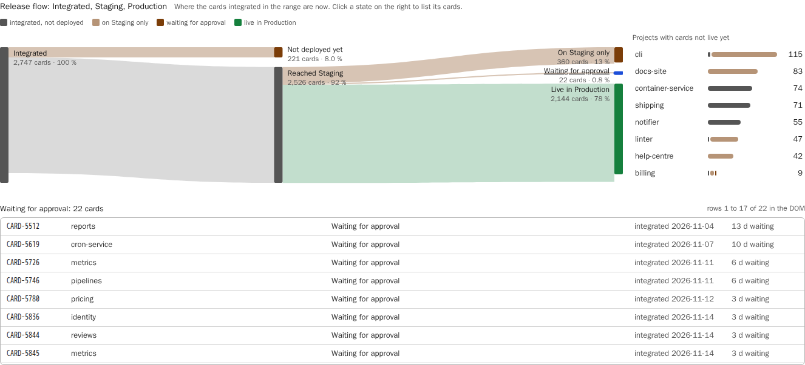
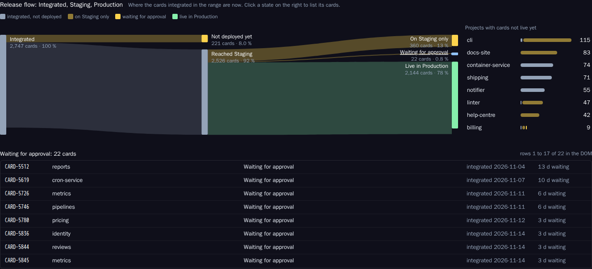
prototype.html, commit base ca26ce2ef) by capture.mjs, headless Chromium, 1440 px, light and dark. Data: the seeded synthetic set of src/data.js, not a product state.Deploy timeline
One lane an environment, one dot a deploy run at its start time. Within a lane a dot sits higher the longer the run took (the lane's top is 15 minutes or more), so slow runs lift off the baseline without a second axis. Succeeded runs are small and translucent, failed and rolled-back runs larger and opaque, running ones a ring. The tooltip names project, environment, tenant, release, duration and, for a failed run, the failing step. The lower chart counts runs a day by outcome over the whole period and carries the brush; dragging across either chart sets the range for every view, and double-click releases it. The legend entries are buttons that filter by outcome. Aggregation: runs as columns and runs.perDay.
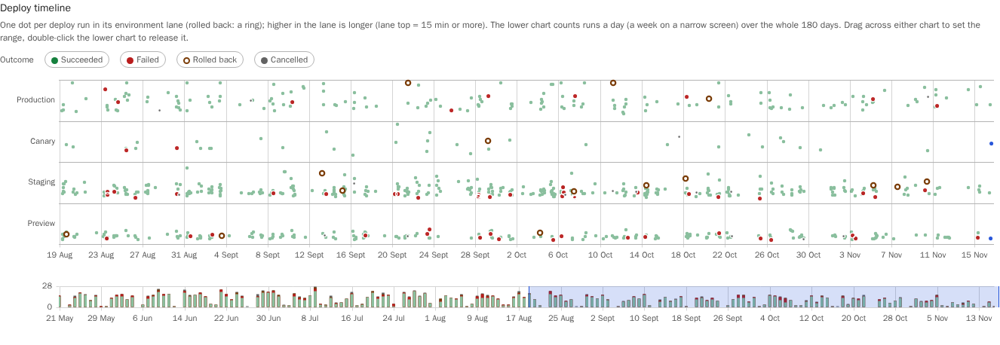
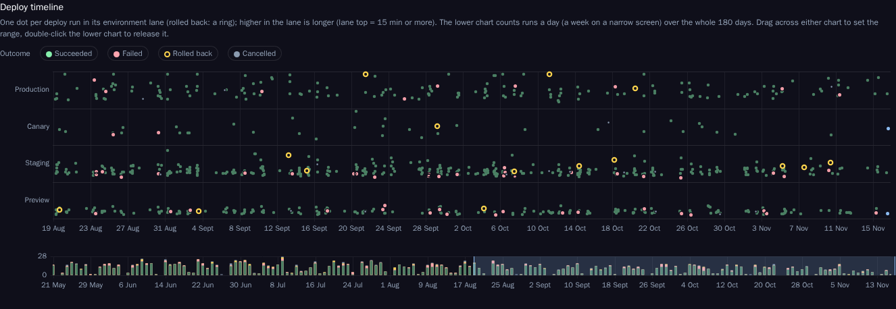
prototype.html, commit base ca26ce2ef) by capture.mjs, headless Chromium, 1440 px, light and dark. Data: the seeded synthetic set of src/data.js, not a product state.Deploy landscape, 3D
The one 3D view, opened on request. Weeks run along one ground axis and projects, in their groups, along the other; a bar's height is the number of deploy runs of that project in that week and its colour the share of them that failed or were rolled back. In 2D a heat map can show only one of the two at a time. The projection is orthographic, so equal heights look equal wherever a bar stands. Drag or arrow keys turn and tilt it, hover reads a bar out in words, and "Flatten to 2D" lays the scene down into the heat map it is made of.
What 3D costs here, plainly: bars hide the bars behind them from any one angle, heights are judged less exactly than positions on a common axis, only group and month labels fit, and a pointer is needed to read a single value. That is why it is opt-in, why the 2D views stay the default and why the same data is one button away as a flat map. Bytes are in Framework, budget and data.
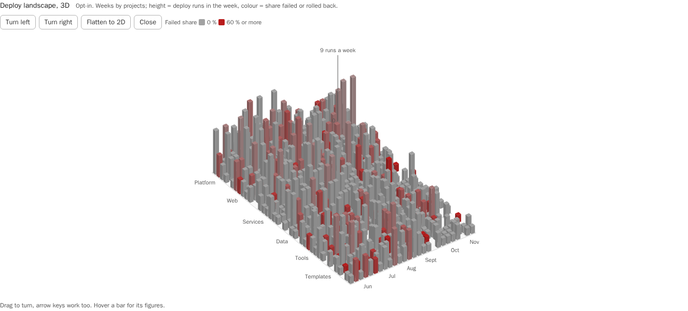
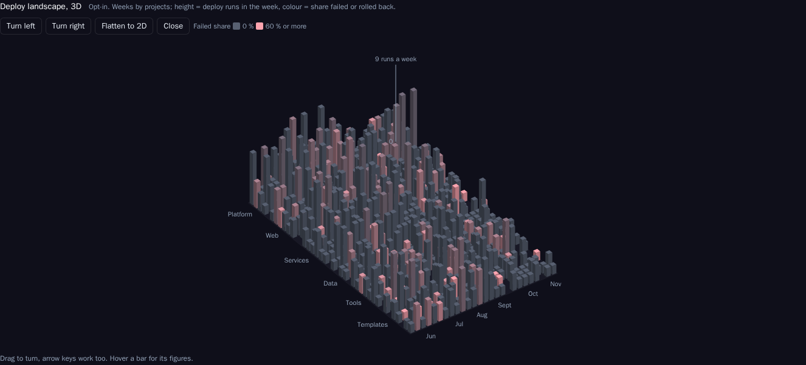
prototype.html, commit base ca26ce2ef) by capture.mjs, headless Chromium, 1440 px, light and dark. Data: the seeded synthetic set of src/data.js, not a product state.Filters
One row above everything it scopes: time range (30, 90, 180 days and two date fields), project group, project, environment, tenant, outcome. Every view reads the same slice, so the numbers agree: the count line states how many projects, runs and cards are inside the filter. Marks are filters too: a tile sets project and environment, a flow state lists its cards, a ranked bar sets the project, a legend entry sets the outcome, a brushed range sets the time. Clicking the mark again releases it. Each active filter is a removable chip and one control clears all.
The state lives in the link: the prototype writes it to the fragment (for example #g=2&o=1&d=180&s=1) and restores it on load; the product carries the same keys as query of #/workspace/deployments. Keyboard: every control is a native element in tab order; the tile map is one tab stop with arrow keys, Enter and Escape; flow states and ranked rows are buttons; the card list scrolls with the arrow keys; the landscape turns with the arrow keys. Focus is always visible.
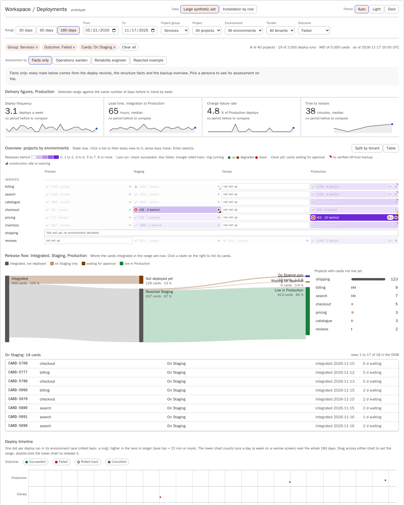
prototype.html, commit base ca26ce2ef) by capture.mjs, headless Chromium, 1440 px, light. Data: the seeded synthetic set of src/data.js, not a product state.Data sets
Large synthetic set, for the budget: 40 projects in six groups, 4 environments, 6 tenants, 2,000 deploy runs and 5,000 cards over 180 days, seeded and therefore identical on every load (src/data.js). It contains what the views must show: three projects without environments, missing environments, a cluster of failures at one step in two projects, laggards of up to 10 releases, and cards that wait.
Installation by role: the Studio itself with Production only (its instance deploy records), a website and a documentation site with Staging and Production, a runner image with Staging, and three projects without environments. Its structure follows the card and the Dossiers named there; its counts are of the installation's order of magnitude. This run had no credentials for the live API, so the set was not read from it; that is stated on the capture and is the first acceptance check of DDC-1.
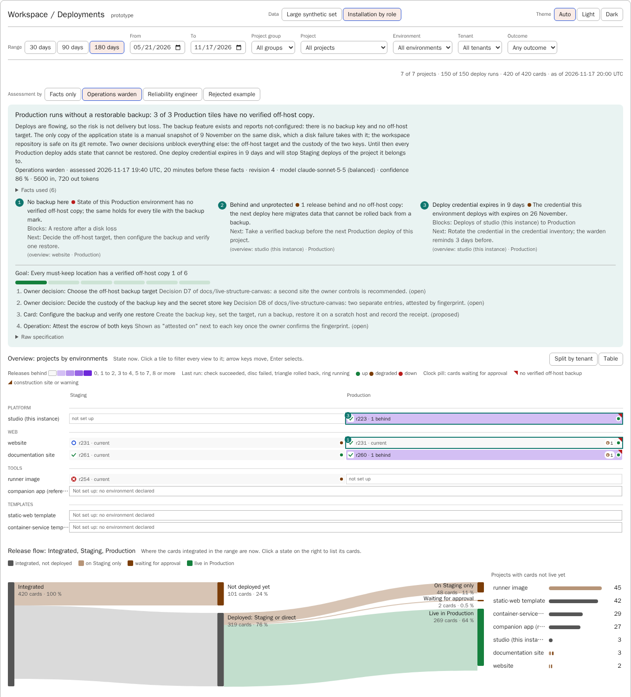
prototype.html, commit base ca26ce2ef) by capture.mjs, headless Chromium, 1440 px, light; counts are of the installation's order of magnitude and are not read from its API. Data: the seeded synthetic set of src/data.js, not a product state.Captures
Phone width, 390 px, each view in both themes:
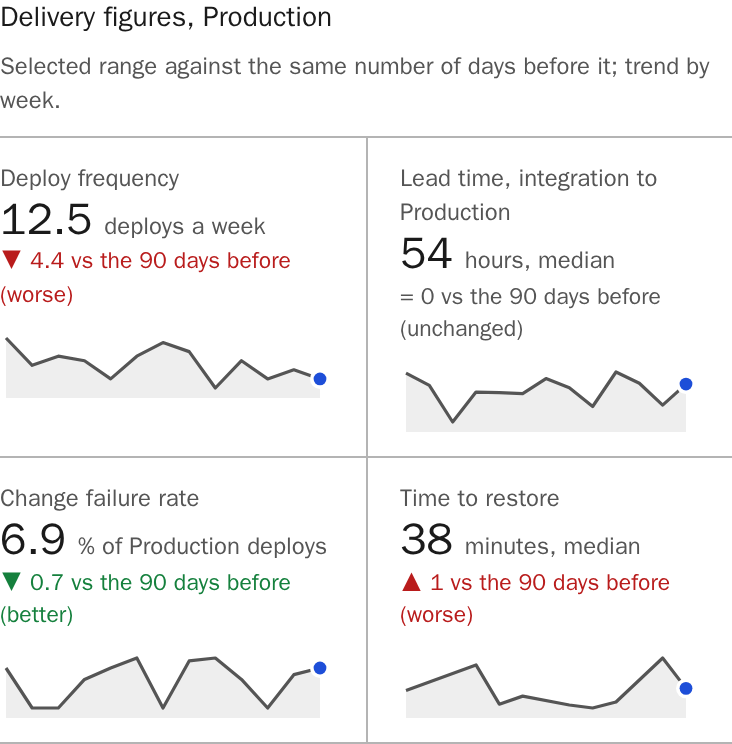
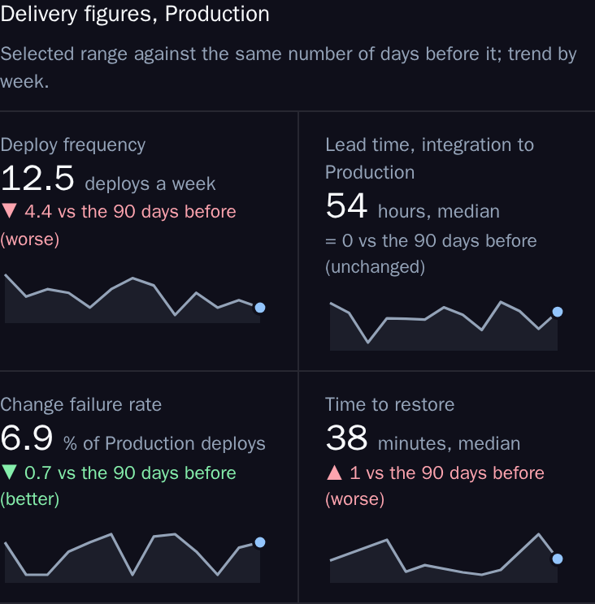
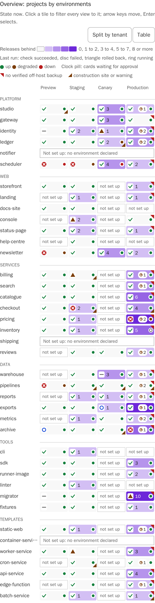
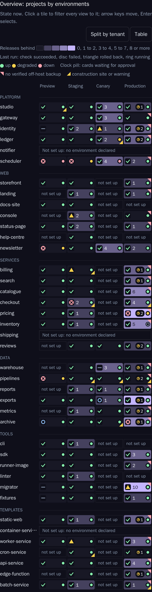
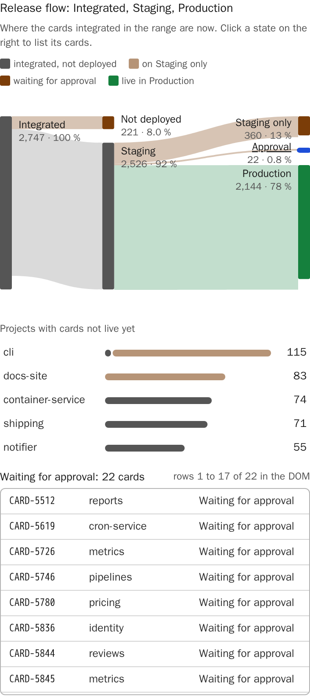
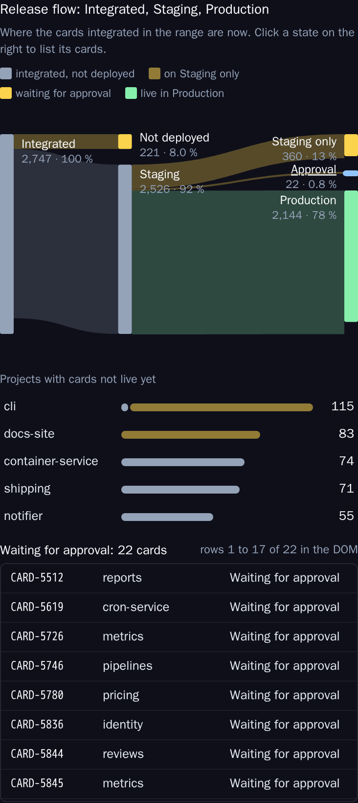
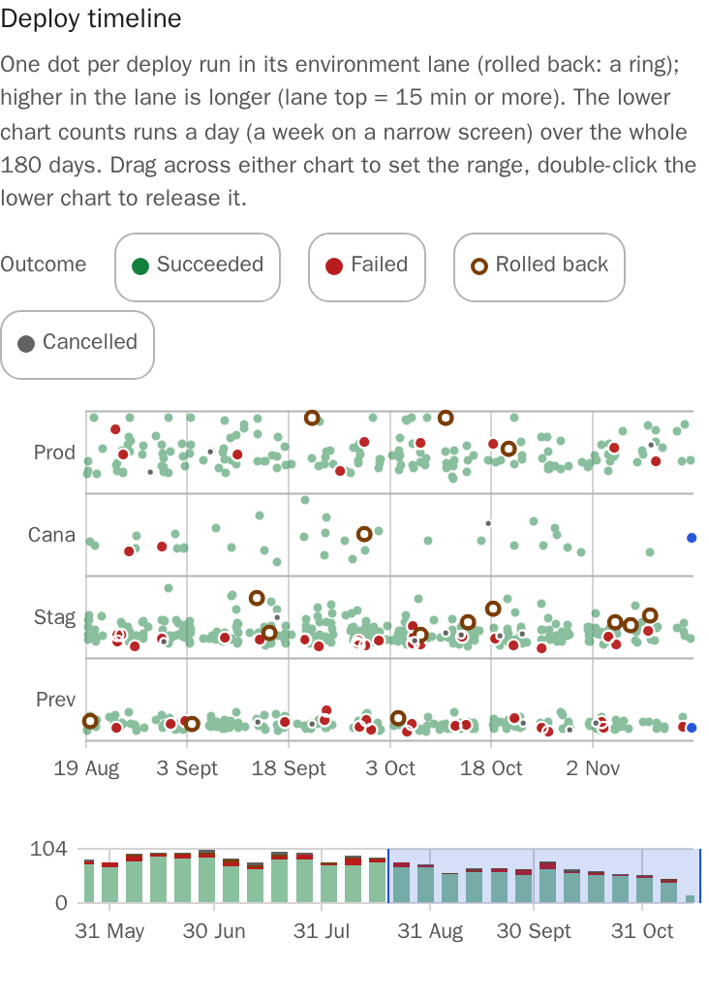
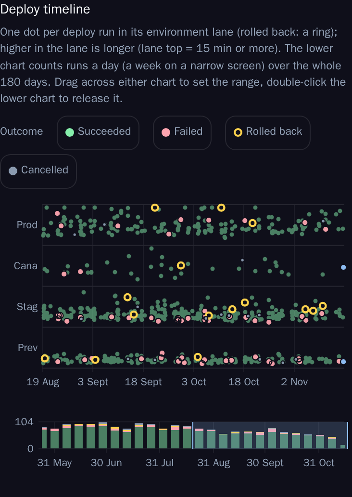
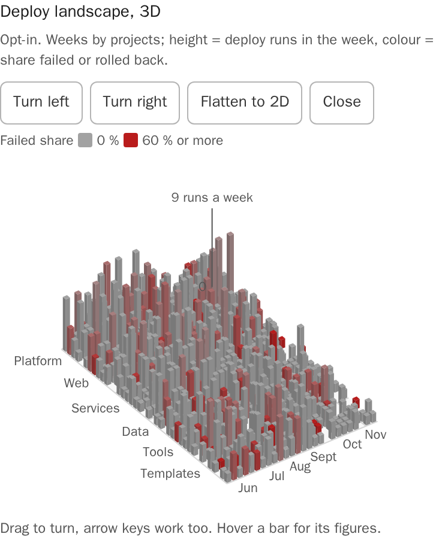
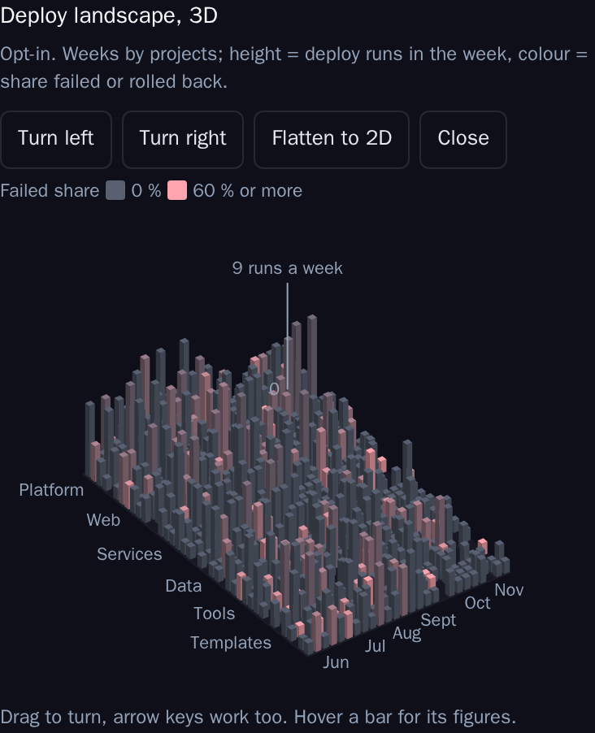
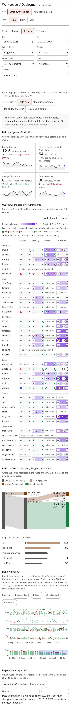
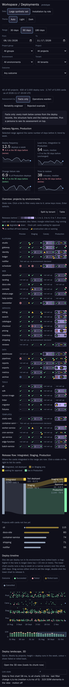
Five views in light and dark at 1440 px and 390 px: 20 of 20 captures present, plus the whole page and the states below. 35 files in assets/.
| File | Theme | Viewport, px | Pixels |
|---|---|---|---|
assessment-rejected-dark-1440.png | dark | 1440 | 1360 × 620 |
assessment-rejected-light-1440.png | light | 1440 | 1360 × 620 |
assessment-reliability-dark-1440.png | dark | 1440 | 1360 × 1500 |
assessment-reliability-light-1440.png | light | 1440 | 1360 × 1500 |
assessment-warden-dark-1440.png | dark | 1440 | 1360 × 1500 |
assessment-warden-light-1440.png | light | 1440 | 1360 × 1500 |
bench-chartjs-light-1440.png | light | 1440 | 1440 × 1604 |
bench-echarts-light-1440.png | light | 1440 | 1440 × 1607 |
crossfilter-light-1440.png | light | 1440 | 1360 × 1700 |
dashboard-dark-1440.png | dark | 1440 | 1360 × 2197 |
dashboard-dark-390.png | dark | 390 | 780 × 7722 |
dashboard-light-1440.png | light | 1440 | 1360 × 2197 |
dashboard-light-390.png | light | 390 | 780 × 7722 |
installation-light-1440.png | light | 1440 | 1360 × 1500 |
tenants-light-1440.png | light | 1440 | 1326 × 732 |
view-3d-dark-1440.png | dark | 1440 | 1326 × 602 |
view-3d-dark-390.png | dark | 390 | 732 × 902 |
view-3d-light-1440.png | light | 1440 | 1326 × 602 |
view-3d-light-390.png | light | 390 | 732 × 902 |
view-figures-dark-1440.png | dark | 1440 | 1326 × 164 |
view-figures-dark-390.png | dark | 390 | 732 × 744 |
view-figures-light-1440.png | light | 1440 | 1326 × 164 |
view-figures-light-390.png | light | 390 | 732 × 744 |
view-flow-dark-1440.png | dark | 1440 | 1326 × 603 |
view-flow-dark-390.png | dark | 390 | 732 × 1640 |
view-flow-light-1440.png | light | 1440 | 1326 × 603 |
view-flow-light-390.png | light | 390 | 732 × 1640 |
view-overview-dark-1440.png | dark | 1440 | 1326 × 732 |
view-overview-dark-390.png | dark | 390 | 732 × 2834 |
view-overview-light-1440.png | light | 1440 | 1326 × 732 |
view-overview-light-390.png | light | 390 | 732 × 2834 |
view-timeline-dark-1440.png | dark | 1440 | 1326 × 458 |
view-timeline-dark-390.png | dark | 390 | 732 × 1032 |
view-timeline-light-1440.png | light | 1440 | 1326 × 458 |
view-timeline-light-390.png | light | 390 | 732 × 1032 |